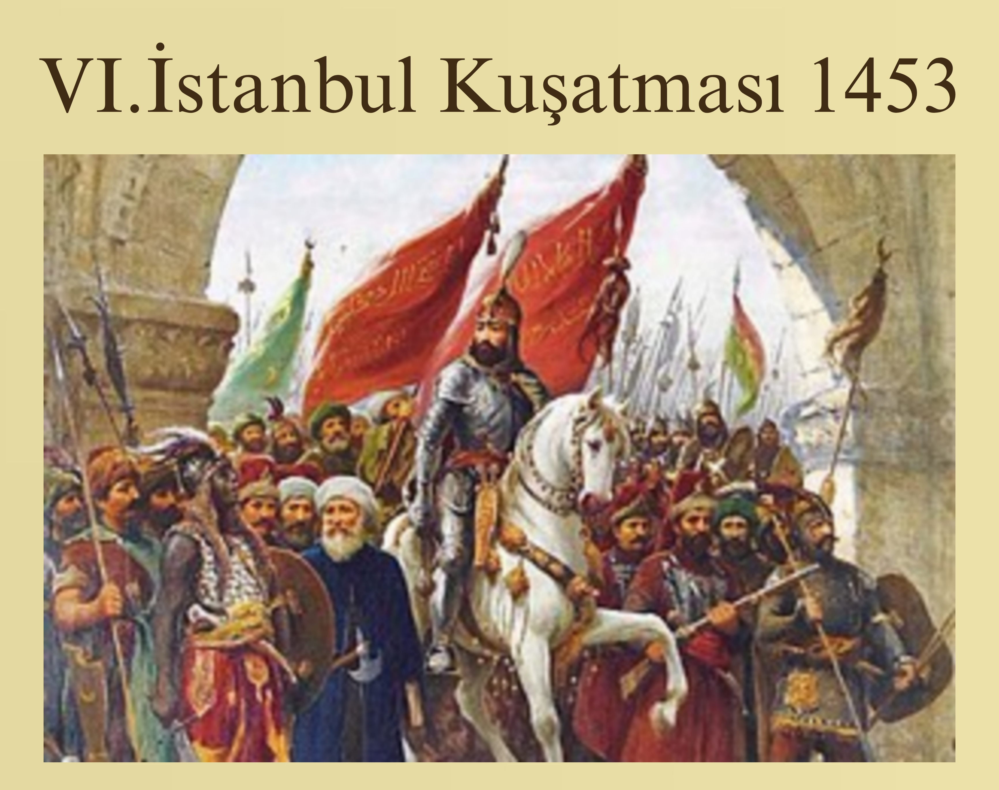

Kuşatma 6 Nisan 1453'te başladı Sultan 2. Mehmed, 6 Nisan 1453
tarihinde İstanbul kuşatmasına başladı. Osmanlı ordusu kenti
karadan ve denizden kuşatma altına alırken, ordu surlarda gedikler
açtıkça Bizanslılar surları yeniliyor, Türkler'in şehre girişine
izin vermiyordu.
Osmanlıyı Keşfet;
ARTIK OSMANLI KÜLTÜR VE TARİHİ İLE İLGİLİ ÇALIŞMALARINIZI VE DÜŞÜNCELERİNİZİ,
OSMANLI'YA İLGİ DUYAN SİTE ÜYELERİMİZ İLE PAYLAŞABİLECEKSİNİZ. TEK YAPMANIZ
GEREKEN ÜYE OLMAK VE YENİ AÇILAN FORUM SAYFALARIMIZA GİRMEK. FORUM SAYFALARIMIZDA
YER ALAN:
- BİLİMSEL ÇALIŞMALAR
- OSMANLI TARİHİ
- ASKERİ YAPI VE SAVAŞLAR
- SULTANLAR VE HAREM
- SANAT VE KÜLTÜR
- 21.YY'DA OSMANLI
- THE OTTOMANS.ORG SİTESİ
BÖLÜMLERİNDE, KENDİ DÜŞÜNCELERİNİZİ AKTARMA VE DİĞER
ÜYELERİMİZİN DÜŞÜNCELERİNİ ÖĞRENME FIRSATINI YAKALAYIN.
|
Tarihçe;
Osman Bey, Oğuz aşiretlerinin ittifakıyla başa
geçtikten sonra, siyasî ve dinî bakımdan Anadolu'nun
en itibarlı ve nüfuzlu tarikatlerinden Ahilerin mühim
bir şahsiyeti olan Şeyh Edebali'nin kızı ile evlenerek,
gücünü artırmış idi.
Askeri Yapı ve Savaşlar;
Bizans İmparatoluğu'nun hududlarında bulunan ve Osman Gazi'ye
bağlı olan Türk aşiretleri atlı idiler. O dönemin iklim, harp,
teknoloji ve siyasi şartlarına göre bu gerekliydi.
Sultanlar ve Harem
Sultanlar Sultanı, Kağanlar Hakanı, İmanlıların Halifesi,
Mekke'nin Medine'nin ve Kudüs'ün hizmetkarı, İstanbul'un
Edirne'nin ve Bursa'nın ve Şam ve Mısır Şehirlerinin ve tüm
Azerbaycan'nın, ve Irak'ın ve Arabistan'nın ve Basra'nın ve
Hasa'nın ve Dile'nin ve...
Sanat ve Kültür;
Osmanlı saraylarından en eski örnek Bursa'da Orhan Bey zamanında
inşa edilen Bey Sarayı'dır. Günümüze hiçbir kalıntı gelmemiş olan
bu saray, daha o dönemde Osmanlı sultanlarına henüz...
|